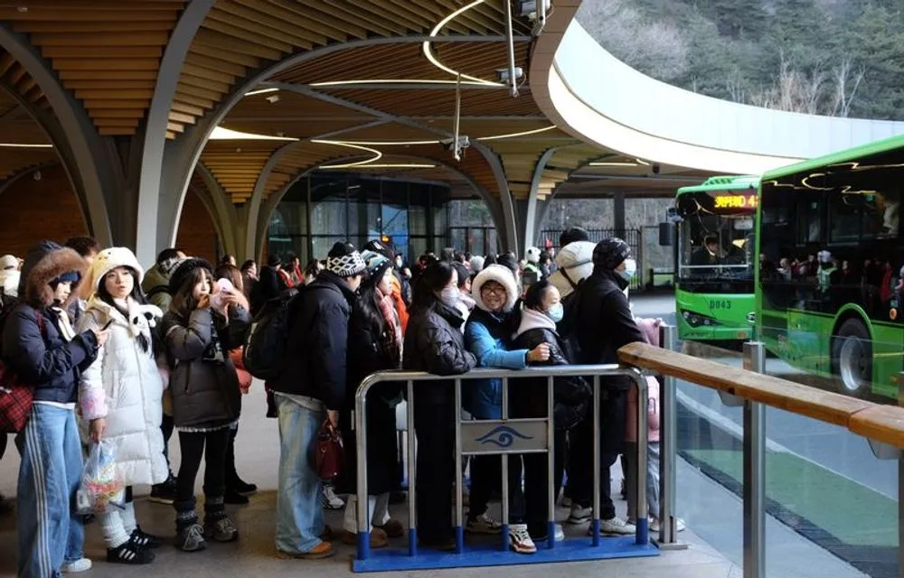
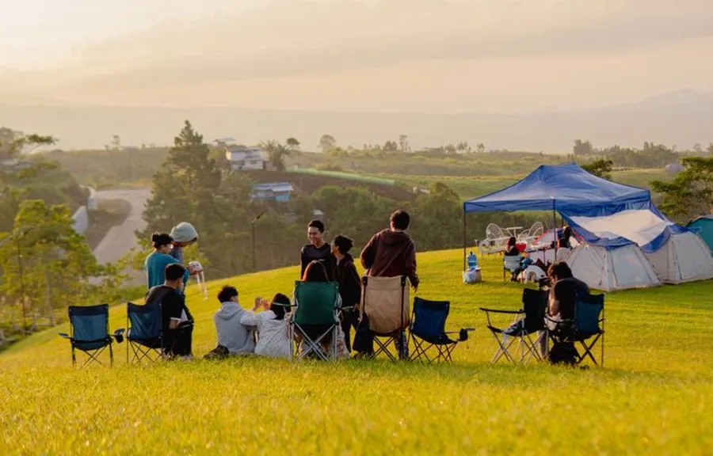
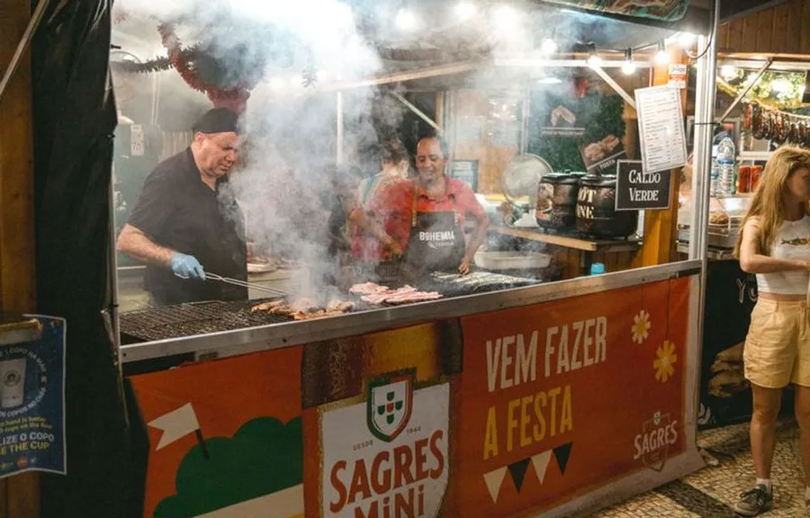

- Home
- Info
Good to know



Getting there
The site is 15 minutes from Moreton station. Shuttle buses run every 20 minutes from 10am on Friday. Car parking is limited, so please car-share.
Camping
Pitch your own tent or choose a ready-pitched bell tent. Showers, charging points and a 24-hour cafe are open all weekend.
Access
Step-free viewing platforms at every stage, accessible camping and personal assistants go free. Email us before you book and we will help.
Food and drink
More than 40 independent traders, a free water refill point at every stage and a bar that stays open until 1am.
Families
Under-12s go free with a ticket-holding adult. There is a quiet family field with a kids’ craft tent and early shows.
Sustainability
Powered by solar and biofuel, plastic-free and a deposit scheme on every cup. Leave no trace but memories.
FAQ
What time do gates open?
Camping opens on Thursday from 2pm. Gates open on Friday at 12 noon, Saturday and Sunday at 11am.
Can I bring my own food and drink?
You can bring food for camping, but no glass and no alcohol over 6 litres of beer or 2 bottles of wine per adult.
Is there phone signal?
Yes. We have a temporary mast on site, though it can be patchy when everyone posts the sunset at once.
What if it rains?
Rain or shine. Wellies are recommended, and there is plenty of covered space at the Forest and Dome stages.
Can I get a refund?
Free cancellation up to 30 days before the festival. After that you can transfer your ticket to a friend for free.